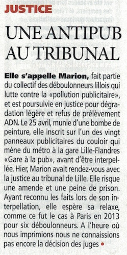
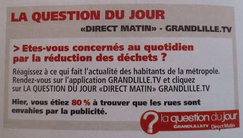

| |
Site dédié à la publication d'informations communiquées par le Collectif des déboulonneurs. En aucun cas ce site n'appelle à des actions illégales. | |
 |
||
|
Accueil du site > Lille > [Lille] 300€ avec sursis pour la déboulonneuse
Jeudi 23 février 2017, le Tribunal de Grande Instance de Lille a condamné une déboulonneuse à 300€ avec sursis pour le barbouillage et l’a relaxé pour son refus de prélèvement ADN. L’audience avait eu lieu le 21 février 2017. Il est curieux de constater qu’en 2015, pour les mêmes faits, le tribunal de Lille avait délibéré l’exacte inverse : relaxe pour le barbouillage et amende avec sursis pour le refus d’ADN. Tant que la place de la publicité ne sera pas réduite de façon significative, les déboulonneurs continueront leurs actions. Les Déboulonneurs agissent de manière non-violente, symbolique, dans le but principal de créer du débat sur les dangers immédiats et reconnus de la publicité, par l’inscription de messages politiques, afin de faire changer la loi et protéger les citoyens. Ils invitent chacun à se mobiliser contre la publicité, notamment lors de la Journée mondiale contre la publicité (25mars). Contacts : Marion : 06 95 91 03 35 Alessandro Di Giuseppe : 07 81 21 50 88 ================== Rappel des faits et du procès Lors de ce procès, tenu le 21 février 2017, une barbouilleuse a comparu pour avoir inscrit "Gare à la pub" sur un panneau publicitaire et pour avoir refusé de donner son ADN. Les témoins entendus étaient Mehdi Khamassi (chercheur en sciences cognitives), Christophe Laurens (architecte) et André Gattolin (sénateur). Maître Ruef, avocate, avait demandé la relaxe pour absence de dégradation et la relaxe pour refus d’ADN. La procureur avait requis 100€ d’amende pour le barbouillage et la relaxe pour le refus d’ADN. Keolis s’était porté partie civile tout en présentant une facture de nettoyage n’ayant aucun rapport avec l’action pour laquelle la militante était poursuivie (lieu et adresse ne correspondaient pas à l’action visée). La constitution de partie civile a logiquement été jugée irrecevable. ================= Revue de presse GrandLilleTV - 22/02/17 La Voix du Nord - 22/02/17 La Voix du Nord - 23/02/17 DirectMatin - 22/02/17 
DirectMatin - 23/02/17 
France Bleu Nord - Journal de 17h - 21/02/17 France 3 Nord - 23/02/17 Le Parisien - 23/02/17 |
|
Site utilisant SPIP - Hébergement Ouvaton
|